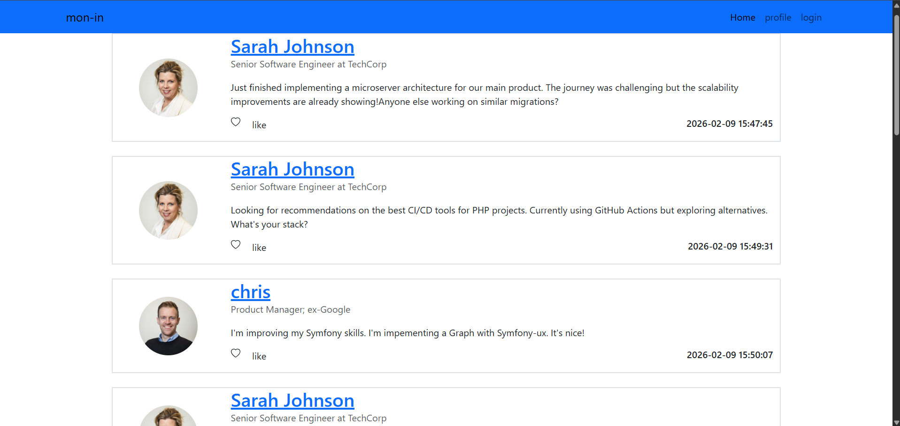

Een desktopapplicatie gemaakt in C#.

Tijdens dit project heb ik gewerkt aan een desktopapplicatie in C#. Ik heb mij vooral beziggehouden met het maken van een registratiepagina, een inlogpagina en een uitlogfunctie. Hierdoor heb ik geleerd hoe gebruikers zich kunnen aanmelden en veilig kunnen inloggen.
Jaar
Taal
Framework
IDE